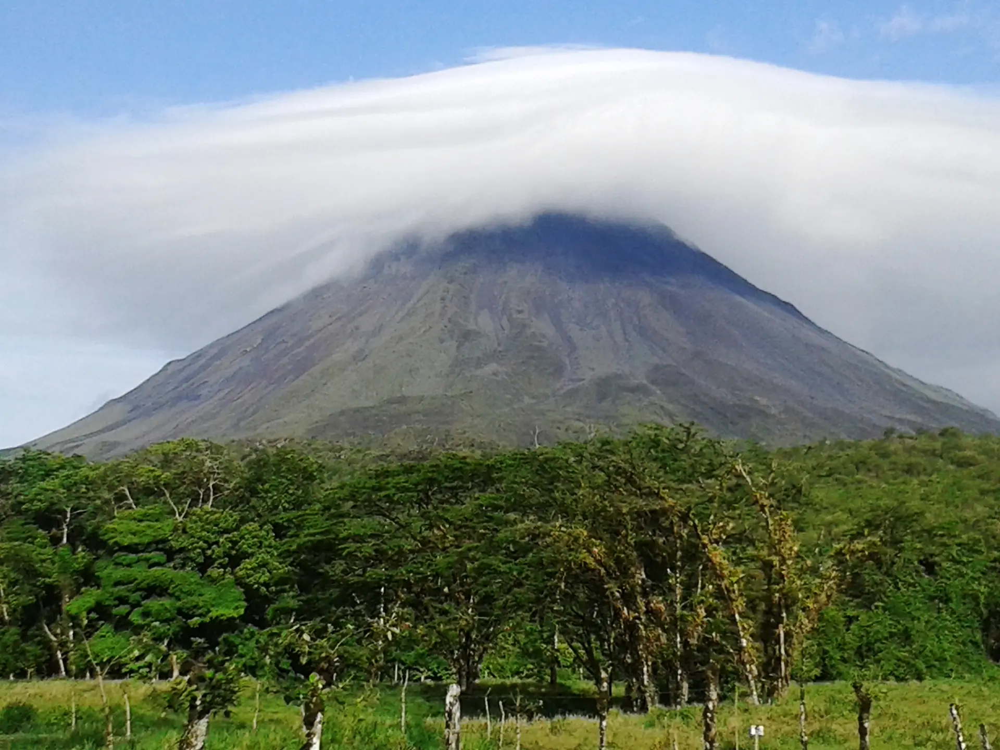

Updated September 2026
There is no single right number of nights for La Fortuna. Compare 2, 3, 4 and 5+ nights, understand why nights aren't the same as full days, and see how arrival and departure timing changes the real answer.
- There is no single correct number of nights; it depends on arrival timing, departure timing, priorities and pace
- N nights generally gives you closer to N minus 1 full days, not N full days
- LIR to La Fortuna is roughly 2.5 to 3 hours as a planning estimate
- Wild Papagayo does not offer LIR to La Fortuna transfers for flights arriving at night
- Hanging bridges, a volcano hike and a safari float are commonly sold together as one long day, often around 9 hours
Recommended For Your Trip

Arenal Hanging Bridges Mistico
Private full-day Arenal Hanging Bridges experience at Mistico Park, canopy-level suspension bridges from 5 to 100 metres, La Fortuna Waterfall and optional hot springs. Breakfast and lunch included. Bilingual guide.

Rainforest & Hot Springs Arenal
Private full-day Arenal experience, Bogarin Trail wildlife hike, La Fortuna Waterfall or Arenal National Park, thermal hot springs, breakfast and lunch included. Arenal Volcano and Central America's largest man-made lake.
There is no single correct number of nights for La Fortuna. How much time you actually need depends on when you arrive, when you leave, which experiences you care most about, how fast you like to move, and whether La Fortuna is the whole trip or one stop before somewhere else. Most travelers land somewhere between 2 and 4 nights, but the right answer is the one that matches your own priorities, not a fixed rule.
Nights Are Not the Same as Full Days
This is the detail that trips people up when planning. A "night" is a night in a hotel bed; a "full day" is a day with no arrival travel and no departure travel on it. Your arrival day starts partway through, however far into it your transfer lands you. Your departure day ends whenever you need to leave for the airport, the next hotel, or a transfer connection. If your trip also includes a transfer day to another region, that day's usable La Fortuna time shrinks further. As a rough pattern, N nights generally gives you closer to N minus 1 full days, not N full days, because the arrival and departure days each carry only partial time. Exactly how much partial time depends on your specific flight and transfer schedule, so treat this as a planning pattern, not a formula.
How Much Time Do You Actually Need?
The table below matches stay length to a realistic usable-time pattern. None of these is labeled best; they answer different priorities.
| Stay length | Usable time pattern | What it can reasonably support | Main trade-off |
|---|---|---|---|
| 1 night | Arrival evening + 1 morning, or a short stopover | One major experience, chosen carefully | Very little buffer; almost no room for weather or a slow start |
| 2 nights | About 1 full day, plus partial arrival/departure time | One full-day priority plus a shorter add-on nearby | Little flexibility if plans need to shift |
| 3 nights | About 2 full days, plus partial arrival/departure time | Two full-day priorities, such as a hike and a waterfall or hot springs evening | Still tight if you want several major experiences without feeling rushed |
| 4 nights | About 3 full days, plus partial arrival/departure time | Three full-day priorities, or two with a slower pace and downtime | Costs an extra night versus a 3-night stay |
| 5+ nights | 3 or more full days, plus partial arrival/departure time | A slower pace, more activity categories, and a buffer against a rained-out afternoon | Only worth it if you have the extra nights to give it |
Count your arrival and departure days as partial days, not full ones. If you want 2 full activity days, book 3 nights; if you want 3 full days, book 4.
One Night
One night usually means an arrival evening, one morning or afternoon, and a departure. That is enough time for a single major experience chosen carefully, such as an evening at the hot springs or one morning activity, but it leaves almost no room for a delay, a rained-out plan, or a second experience. It is not impossible, and it can make sense as a short stopover on a longer route, but it is the tightest of these options by a wide margin.
Two Nights
Two nights typically works out to about one full day, plus whatever partial time your arrival and departure allow. That is realistically enough for one full-day priority, such as a morning activity followed by an afternoon at a different spot nearby, with an evening hot-springs soak if you want it. Arrival and departure timing matters more here than at any longer stay, since there is very little buffer to absorb a late flight or a slow start.
Three Nights
Is 3 nights enough in La Fortuna? For many travelers, yes, with the understanding that 3 nights generally gives you about 2 full days, not 3. That is enough to pair one full-day priority, such as a hanging-bridges walk or a hike, with a second, such as a waterfall visit or a longer hot-springs evening. It is a common choice precisely because it fits a full weekend-style trip without over-committing, but it is still tight if your list includes several major experiences and you also want unhurried time at each one.
Four Nights
The extra night over a 3-night stay adds roughly one more full day, which is usually the difference between choosing two priorities and comfortably fitting three, or keeping two priorities but adding real downtime between them. It also buys schedule flexibility: if one afternoon brings rain, you have another day to shift plans around it rather than losing the only chance. Four nights is not a requirement for everyone, but it removes most of the pressure to pack every experience into a single day.
Five or More Nights
Longer stays make the most sense for travelers who want to slow down rather than see more: spreading activities out with rest days between them, adding wellness or hot-springs time without cutting into a hiking day, or building in a buffer against a stretch of poor weather during green season. It is not a requirement for a good trip, and this guide is not padding your itinerary to justify extra nights; it is worth considering only if a slower pace or genuine weather flexibility matters to you.
Arrival Day: Why the Timing Matters
How much of your first day you actually get depends heavily on when you land. An early arrival can leave room for a light activity that same afternoon. A midday arrival usually means settling in and saving activities for the next day. A late-afternoon or evening arrival typically leaves only dinner and rest, with the first real activity day starting the next morning. From Liberia Airport (LIR), the drive to La Fortuna is roughly 2.5 to 3 hours as a planning estimate, with a scenic final stretch along Lake Arenal; treat it as an estimate, not a guarantee, since conditions vary. Wild Papagayo does not offer LIR to La Fortuna transfers for flights arriving at night, which is worth factoring into your arrival-day plan if that applies to you.
Departure Day: Usually Not a Full Day
Your last day rarely functions as a full activity day. How much of it you keep usable depends on your checkout time, how far your next stop is, and whether you're catching a flight or continuing by road. If you're heading toward Guanacaste or back to LIR, budget real transfer time before you plan anything else that day; we don't publish a fixed schedule for what that specific morning looks like, since it depends on your own booking.
Transfer Days Cost Real Time
If your trip continues from La Fortuna to another region, that leg is its own day, not a bonus half-day tacked onto your stay. Wild Papagayo offers private transportation between La Fortuna and Guanacaste, subject to availability and your requested destination; as a general planning reference, the drive from Arenal to the Papagayo area runs roughly 3 to 3.5 hours. Changing destinations consumes usable vacation time either way, so it is worth counting that day separately rather than assuming you will still get a full day of La Fortuna activities on top of it.
Matching Activities to the Time You Have
Rather than a fixed itinerary, think in categories: a hanging-bridges canopy walk (a rainforest loop that typically runs about two to three hours), a hike toward Arenal Volcano National Park's trail system (not a hike to the active crater), a river safari float, La Fortuna Waterfall, wildlife-watching, hot springs, and a coffee or chocolate tour. With one full day, prioritize one of these and build the rest of the day loosely around it. With two full days, you can pair a hiking or wildlife morning with a waterfall or hot-springs afternoon on a separate day, rather than rushing both into one. With three full days, you gain enough flexibility to add a slower-paced experience, like a coffee tour, or simply leave a half-day open.
Can You Do Hanging Bridges, a Volcano Hike and a Safari Float in One Day?
Several local operators sell exactly this as a packaged full day, commonly built around a 9-hour combination of the three. It is genuinely possible, but packing three major experiences into one day changes the pace: less time to linger at any one stop, an earlier start, and a longer day overall. Whether that suits you depends on your priorities. If you would rather move at a relaxed pace, spreading these across two days uses your time differently than combining them into one long day; if you want to cover ground efficiently and don't mind a full day, the packaged combination is a realistic option.
Hot Springs: An Evening Add-On or a Bigger Piece of the Day?
Hot springs can work either way, and it changes how much time they cost. An evening soak after an activity day adds relaxation without taking a slot away from anything else. Choosing a hot-springs property as a half-day or full-day experience in its own right is a different, more substantial time commitment. Neither is the wrong approach; it depends on whether you want hot springs as a wind-down or as a priority in itself.
Does Weather Change the Answer?
Costa Rica's green season runs roughly May through November, and rain in this area typically arrives as afternoon bursts rather than all-day downpours, with mornings more often clear. An extra night doesn't guarantee better weather, a volcano view, or a wildlife sighting, but it does give you a second chance if one afternoon gets rained out, which a single-day plan doesn't have.
Traveling with Family or as a Couple
Families sometimes prefer more schedule margin between activities, since transfer time and an early start affect children differently than adults; this is a pacing note, not medical guidance, and this guide is not a family itinerary. Couples prioritizing hot springs or slower resort time over covering several activities may lean toward fewer, longer stops rather than a packed schedule. Either way, the nights-versus-full-days pattern above still applies.
Getting Around Without a Rental Car
Everything above assumes your transportation is arranged rather than self-driven. If you're weighing whether you need a rental car at all, see our La Fortuna without a rental car recap, and for the road from the airport, our Liberia Airport to Arenal drive-times guide covers the leg in more detail.
Not sure how many nights to book?
Tell us your arrival and departure timing and what you most want to do, and Wild Papagayo can help you think through the pacing. Message us on WhatsApp →
Frequently Asked Questions
How many days do you need in La Fortuna?
It depends on your arrival and departure timing, your activity priorities, your pace, and whether you're continuing elsewhere afterward. Most travelers stay somewhere between 2 and 4 nights, but there is no single correct number.
How many nights should you stay in La Fortuna?
Enough nights to cover the full days you actually need, plus one, since your arrival and departure days only provide partial time. As a planning pattern, N nights generally gives you closer to N minus 1 full days.
Is 2 nights enough in La Fortuna?
It can work for one full-day priority plus a shorter add-on, but it leaves very little room for a late arrival, a delay, or a second major experience.
Is 3 nights enough in La Fortuna?
For many travelers, yes. Three nights generally gives about 2 full days, enough to pair one full-day priority with a second, though it is still tight if you want several major experiences without rushing.
Are 4 nights too many in La Fortuna?
Not necessarily. Four nights isn't required for everyone, but the extra time usually goes toward a third priority, a slower pace, or a buffer if one afternoon brings rain, rather than being wasted.
How many full days do you get from 3 nights?
Generally about 2 full days, since the arrival and departure nights each carry only partial usable time depending on your travel schedule.
Can you do hanging bridges, a volcano hike and a safari float in one day?
Local operators commonly sell this as a packaged day, often around 9 hours for the three combined. It's realistic, but packing all three into one day means a longer day and less time to linger at each stop.
Keep Reading

We respond on WhatsApp in under 2 hours.
Private tours, airport transfers, expert guides — all in one message.
No WhatsApp? Email us at info@wildpapagayo.com